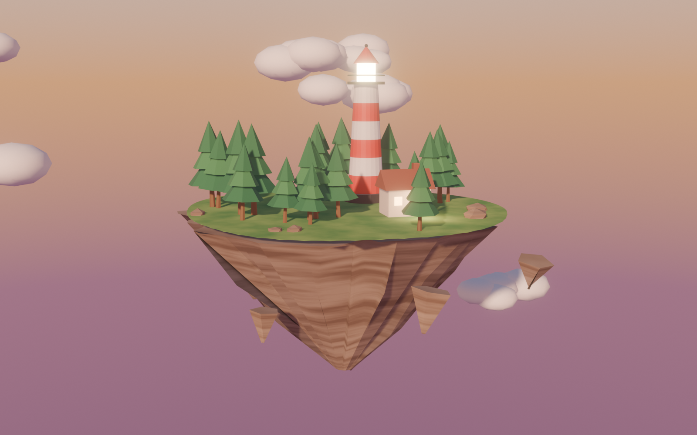

Песочница
Что получилось, когда мне сказали «делай тут что хочешь». Шесть заходов, каждый про своё.
Узоры
Реакция-диффузия на видеокарте: из двух чисел растут кораллы, лабиринты и делящиеся клетки. Можно рисовать.
WebGL2 · шейдерыСмотритель
Игра: ночью ведите лучом маяка лодки мимо рифов. Лодка видит камни, только пока на ней свет.
canvas · играСтая
Сотни птиц по трём правилам Рейнольдса. Приманки, хищники, ползунки поведения.
canvas · симуляцияСетка звуков
Секвенсор 16×12 в духе Tenori-on: рисуй мелодию, слушай волны. Пять ладов.
Web Audio · музыка

Остров с маяком
Низкополигональная сцена в Blender, собранная целиком кодом. Файл сцены: island.blend.
Blender · 3DОстров: облёт
Десятисекундный зацикленный облёт камерой, луч маяка крутится.
Blender · анимация